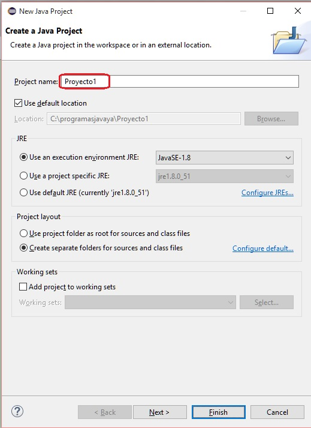
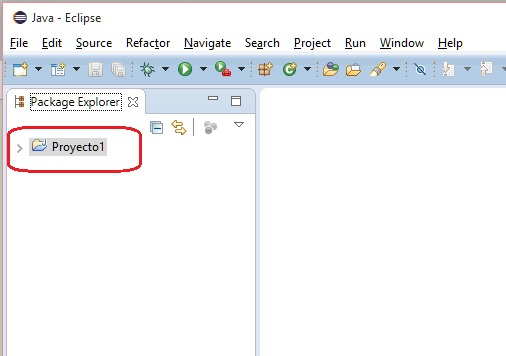
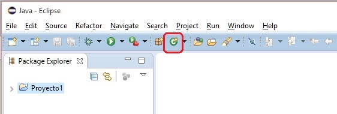
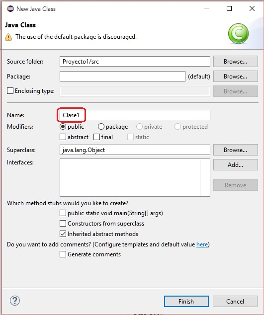
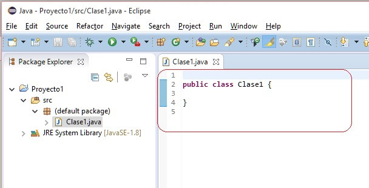
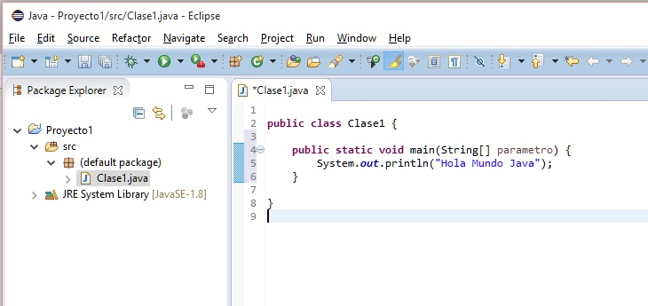
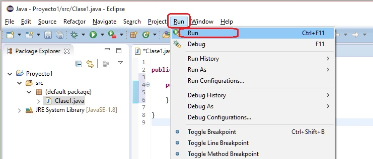
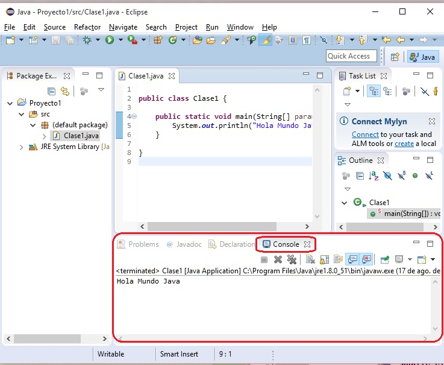

El Eclipse es un entorno de trabajo profesional, por lo que en un principio puede parecer complejo el desarrollo de nuestros primeros programas.
Todo programa en Eclipse requiere la creación de un "Proyecto", para esto debemos seleccionar desde el menú de opciones:

Ahora aparece el diálogo donde debemos definir el nombre de nuestro proyecto:

En el campo de texto "Project Name" ingresamos como nombre: Proyecto1 y dejamos todas las otras opciones del diálogo con los valores por defecto. Presionamos el botón "Finish".
Ahora en la ventana de "Package Explorer" aparece el proyecto que acabamos de crear:

Como segundo paso veremos que todo programa en Java requiere como mínimo una clase. Para crear una clase debemos seleccionar desde el menú de opciones:

O desde la barra de íconos del Eclipse:

En el diálogo que aparece debemos definir el nombre de la clase (en nuestro primer ejemplo la llamaremos Clase1 (con mayúscula la letra C), luego veremos que es importante definir un nombre que represente al objetivo de la misma), los otros datos del diálogo los dejamos con los valores por defecto:

Luego de presionar el botón "Finish" tenemos el archivo donde podemos codificar nuestro primer programa:

Más adelante veremos los archivos que se crean en un proyecto, ahora nos dedicaremos a codificar nuestro primer programa. En la ventana de edición ya tenemos el esqueleto de una clase de Java que el entorno Eclipse nos creó automáticamente.
public class Clase1 {
}
Todo programa en Java debe definir la función main. Esta función la debemos codificar dentro de la clase: "Clase1".
Procedemos a tipear lo siguiente:
public class Clase1 {
public static void main(String[] parametro) {
System.out.println("Hola Mundo Java");
}
}
Es decir tenemos codificado en el entorno del Eclipse nuestro primer programa:

Como último paso debemos compilar y ejecutar el programa, esto lo podemos hacer desde el menú de opciones:

O desde la barra de íconos del Eclipse:

Si no hay errores de codificación debemos ver el resultado de la ejecución en una ventana del Eclipse llamada "Console" que aparece en la parte inferior (puede aparecer un diálogo pidiendo que grabemos el archivo, el cual confirmamos):

Lo más importante es que quede claro los pasos que debemos dar para crear un proyecto en Java. El objetivo de una clase, la función main etc. los veremos a lo largo de este curso.